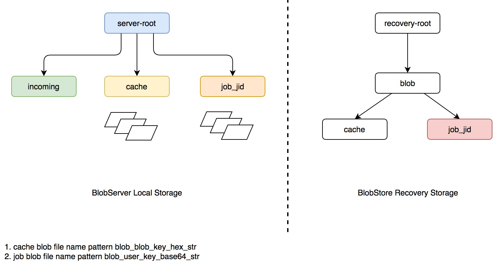
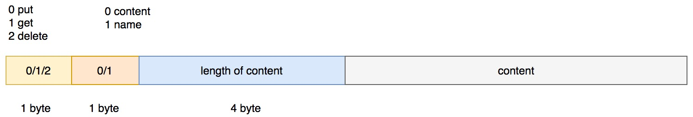
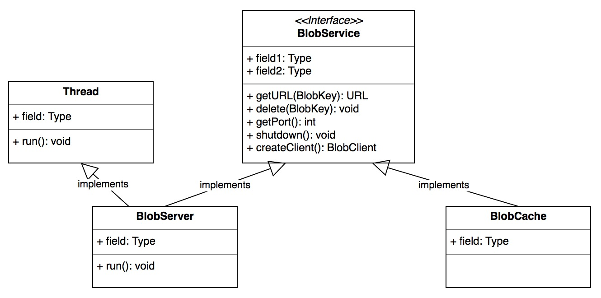
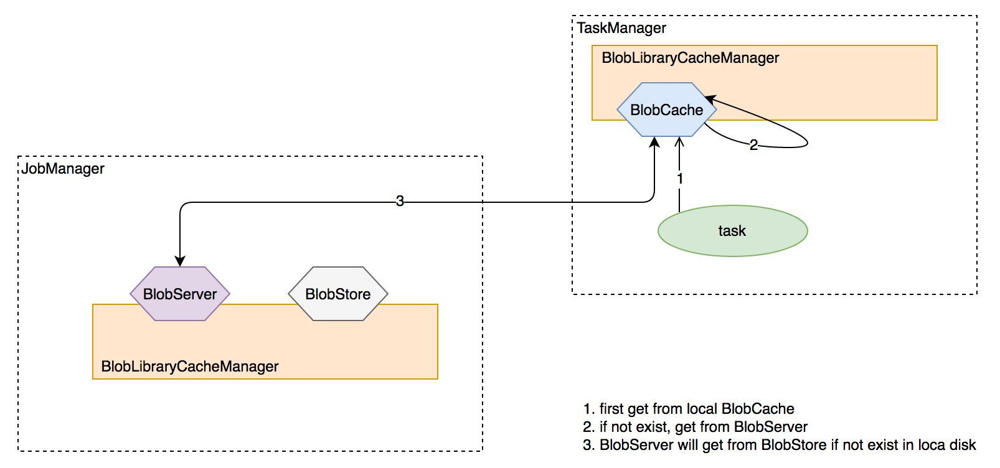
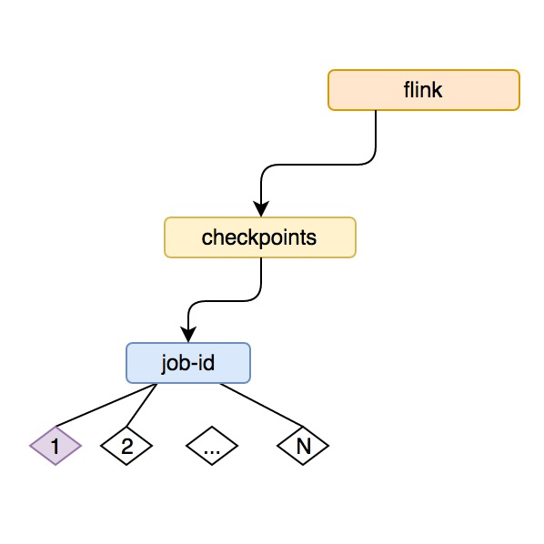

前言
JobManager 是 flink 集群的中控节点，类似于 Apache Storm 的 Nimbus 以及 Apache Spark 的 Driver 的角色，它负责作业的调度、jar 包管理、checkpoint 的协调和发起等，为了后续章节的开展，本文将介绍 flink JobManager 中所部署的一些服务。
BolbServer
flink 用来管理二进制大文件的服务，flink JobManager 中启动的 BLOB Server 负责监听请求并派发线程去处理。更进一步，它将负责创建对应的目录结构去存储这些 BLOBs 或者只是临时性地缓存。背后支持的文件系统：本底磁盘
来看它的构造器：
- 第一步获取 RecoveryMode，一共两种 STANDALONE 和 ZOOKEEPER，后者是有 JobManager leader 选举的高可用模式
- 获取文件系统存储的根目录，可配置，默认是从系统环境变量
System.getProperty("java.io.tmpdir")中获取，其实就是本次磁盘存储 - 初始化 恢复存储 模块 BolbStore，STANDALONE 模式下为 VoidBlobStore，VoidBlobStore 是一个空实现；不会有任何持久化操作；ZOOKEEPER 模式下为 FileSystemBlobStore，FileSystemBlobStore 内部封装了磁盘文件的管理，包括添加、删除、拷贝等，BlogStore 会备份 BlobServer 的本地存储，主要用于恢复模式下的作业磁盘状态恢复用
- 启动 ServerSocket
- 启动 BlobServer 服务线程
BlogServer 和 BlobStore
BlobStore 是 BlobServer 的组件之一，BolbStore 主要负责 BlobServer 本地存储的恢复【JobManager 重启】，这里只介绍 FileSystemBlobStore，FileSystemBlobStore 依据配置的不同支持两种文件系统存储：HDFS 和 本地文件系统
BlobServer 和 FileSystemBlobStore 的存储目录结构如下图所示：

下面以一次客户端连接请求的发起介绍两者的协同
来看 BolbServer 的核心 run 方法:
|
|
简要概括下逻辑：
- 当服务端收到一次存储的 request 时，会首先封装成对象 BlobServerConnection，并执行其
start()方法 - BlobServerConnection 本身也是一个 Thread，封装了具体的存储逻辑
- 会接收 3 种客户端请求：PUT/GET/DELETE，具体见：
|
|
这里重点介绍下 PUT 操作
- 获取本次存储操作是否带 JobID
- 在 BlobServer 的本地 incoming 文件夹中生成临时文件：temp-[auto increment integer]
- 读取将要存储的字节长度
- 读取该长度字节存储到临时文件 temp-[auto increment integer]
- 如果带 JobID，会将临时文件移动到 JobID 对应的存储目录，并将该存储文件在 BlobStore 的对应 JobID恢复目录中备份，写 OK 消息到 Socket Client 端，最终生成的路径和文件： job-id/blob_[base64 encode key]
- 如果不带 JobID，则依据传递的消息字节数组生成一个 key：BlogKey，并存储在 cache 文件夹下，同时在 BlobStore 的 cache 文件夹下做备份，将 OK 消息和 BlobKey 写回 Socket Client，最终生成的路径和文件：cache/blob_[unique hex string]
BlobServer 交互协议
与 BlobServer 通信的消息协议包括四段：操作类型【PUT/GET/DELETE】、存储类型【是否带 JobID】、内容长度、内容，如下图所示：

到这里 BlobServer 就介绍完了
InstanceManager
flink 用来追踪当前存活的 TaskManager 的管理组件，实现比较简单，这里只简单罗列下其功能：
- book 下载 JobManager 中注册的所有 TaskManager
- 负责更新从 TaskManager 中上报的心跳及 metrics 信息
- 通知 InstanceListener TaskManager 的增加与死亡
BlobLibraryCacheManager
flink job 的 jar 包存储服务，使用上面的 BlobServer 完成，一个 JVM 里只会存在一个 BlobLibraryCacheManager，BlobLibraryCacheManager 负责管理 BlobService【这里为BlobServer】 中存储的 jars，并存储运行时 task 对 BlobService 中 jars 的引用计数，会清理不被使用任何 task 使用的 jars。
BlobCache 负责 jars 的下载，介绍 TaskManager 的时候会详细介绍
BlobLibraryCacheManager 与 BlobService 交互，而 BlobService 负责具体的文件管理，其具体实现有两个：BlobServer 和 BlobCache，具体见下图：

BlobServer 前面已经介绍过了，那么 BlobCache 的功能是什么呢？
来看 BlobCache 的构造器：
|
|
这里传入的 serverAddress 其实是 BlobServer 的服务端口，在 TaskManager 中可以看到：
|
|
来看 BlobCache 的核心服务方法：
|
|
简要概括下其逻辑：
- 先从本地磁盘中获取，如果存在，直接返回
- 如果没有，生成 BlobClient 与 BlobServer 交互，并拉取文件到本地缓存，后返回本地缓存的文件句柄
从这里我们可以看到 BlobCache 是 TaskManager 操作本地文件的工具，它负责从 JobManager 中的 BlobServer 同步所需的文件【jar包等】，而 BlobServer 和 BlobCache 的文件管理的入口，统一由对应 JVM 中的 BlobLibraryCacheManager 来控制【没有任务使用的 jar 定期清除等】。
task 拉取 jar包文件的过程如下：

ZooKeeperCompletedCheckpointStore
flink 做 checkpoint 【有关 checkpoint 会另起一节介绍】存储的组件，负责存储已完成的 Checkpoint ，实现了接口 CompletedCheckpointStore，StandaloneCompletedCheckpointStore 和 ZooKeeperCompletedCheckpointStore 都实现了 CompletedCheckpointStore 接口，前者只在内存里存储 checkpoint，这里只介绍 ZooKeeperCompletedCheckpointStore 的实现。
ZooKeeperCompletedCheckpointStore 存储 checkpoint 的基本思路：
- 先在本地磁盘持久化指定数量的 checkpoint
- 将文件句柄更新到 ZK 的特定节点下
- 滑动更新 zk 的节点存储
- 在恢复的时候只取最近一次的更新值
先来看下 ZooKeeperCompletedCheckpointStore 用来和 ZK 存储交互的组件：ZooKeeperStateHandleStore，来看它的核心添加 state 的方法：
|
|
简要概括其逻辑：
- 使用 StateStorageHelper 存储 state，ZK 模式下为 FileSystemStateStorageHelper，方式为直接存储到本地磁盘
- 将 state 的句柄对象 StateHandle 序列化并持久化到 ZK 的节点
其在 zk 上的存储路径如下图所示：

现在来看 ZooKeeperCompletedCheckpointStore 的核心功能：添加 checkpoint 和 从 checkpoint 做 recovery
添加 checkpoint
|
|
简要概括其逻辑：
- 在本地磁盘存储该 checkpoint 的内容并返回句柄对象：StateHandle
- 以 checkpoint id 在 zk 上新建一个 node，并存储对应的序列化后的 StateHandle
- 检查存储的 checkpoint 个数是否超过限制，如果超过，删除本地磁盘及zk上最旧的数据
- 如果添加失败，已有的 checkpoint 数据不会受影响，这里 flink 想最大化保留作业的 checkpoint
从 checkpoint 中恢复
|
|
简要概括其逻辑：
- 清除内存中维护的句柄对象 StateHandle s
- 从 ZK 上拉取作业对应的所有的 checkpoint StateHandle 节点，并排序【从小到大】
- 获取最新的一次快照并从本地磁盘恢复 checkpoint
- 删除其余所有的 checkpoint 信息【ZK 和本地磁盘】
ZooKeeperCompletedCheckpointStore 由 ZooKeeperCheckpointRecoveryFactory 负责实例化，一个 Job 会实例化一个 ZooKeeperCompletedCheckpointStore 负责快照。这里存储的只是个节点快照的句柄，并不是真正的状态数据。
具体的启动流程见 JobManager
line1208 val completedCheckpoints = checkpointRecoveryFactory.createCheckpointStore(jobId, userCodeLoader)
line1238 executionGraph.enableSnapshotCheckpointing
到这里 JobManager 的核心组件基本就介绍结束了😄